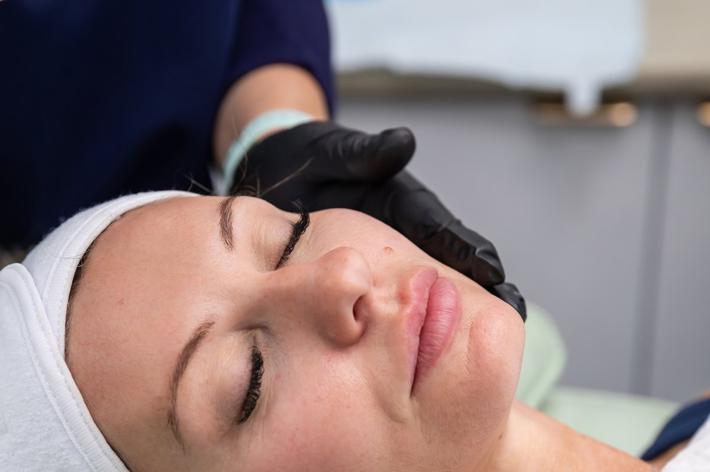

The hormonal shift
Perimenopausal skin
It is not your imagination, and it is not your skincare. When oestrogen falls, collagen goes with it - and the routine that worked for twenty years stops working almost overnight.
Read about perimenopausal skin →